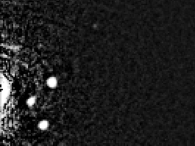
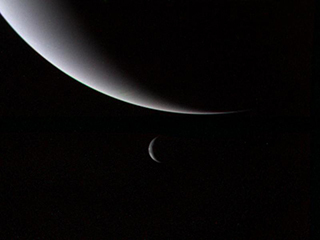
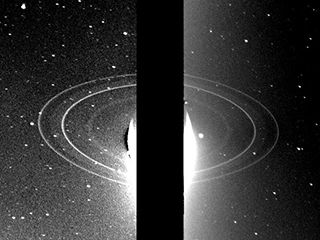
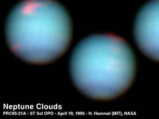
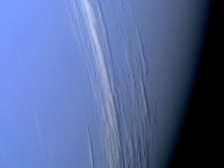
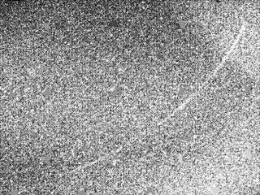
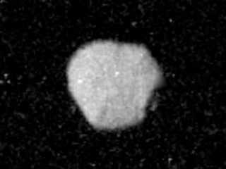
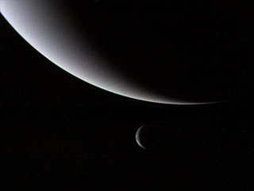
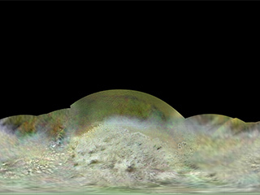
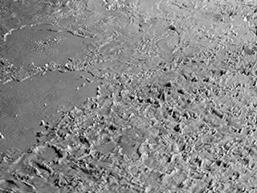

With respect to other planets
Overview
Neptune is the eighth and farthest-known Solar planet from the Sun. In the Solar System, it is the fourth-largest planet by diameter, the third-most-massive planet, and the densest giant planet. It is 17 times the mass of Earth, slightly more massive than its near-twin Uranus.
Neptune is denser and physically smaller than Uranus because its greater mass causes more gravitational compression of its atmosphere. The planet orbits the Sun once every 164.8 years at an average distance of 30.1 AU (4.5 billion km; 2.8 billion mi). It is named after the Roman god of the sea and has the astronomical symbol ♆, a stylised version of the god Neptune's trident.

Commonly know fact
Some Facts
- Neptune is the Most Distant Planet
- Neptune is the Smallest of the Gas Giants
- Neptune’s Surface Gravity is Almost Earth-like
- The Discovery of Neptune is Still a Controversy
Neptune
VS

Neptune Comparision with Other Planets
Below Data are the most accurate and latest values predicted by different space agencies.
| AVERAGE ORBIT DISTANCE | |
|---|---|
| 774,498,396,441 | 149,598,262km |
| MEAN ORBIT VELOCITY | |
|---|---|
| 19,566km/h | 107,218km/h |
| SURFACE GRAVITY | |
|---|---|
| 11.15m/s2 | 9.80665m/s2 |
| ESCAPE VELOCITY | |
|---|---|
| 84,816km/h | 40,284km/h |
| SURFACE AREA | |
|---|---|
| 7,618,272,763km2 | 510,064,472km2 |
10 Things you need to know
1
This may sound like a pretty simple statement, but it’s actually rather complicated. When it was first discovered by in 1846, Neptune became the most distant planet in the Solar System. But then in 1930, Pluto was discovered, and Neptune became the second-most distant planet.
2
With an equatorial radius of only 24,764 km, Neptune is smaller than all the other gas giants in the Solar System: Jupiter, Saturn and Uranus. But here’s the funny thing: Neptune is actually more massive than Uranus by about 18%. Since it’s smaller but more massive, Neptune has a much higher density than Uranus. In fact, at 1.638 g/cm3, Neptune is the densest gas giant in the Solar System.
3
Neptune is a ball of gas and ice, probably with a rocky core. There’s no way you could actually stand on the surface of Neptune without just sinking in. However, if you could stand on the surface of Neptune, you would notice something amazing.
4
The first person to have seen Neptune was likely Galileo, who marked it as a star in one of his drawings. However, since he did not identify it as a planet, he is not credited with the discovery. That credit goes to French mathematician Urbain Le Verrier and the English mathematician John Couch Adams, both of whom predicted that a new planet – known as Planet X – would be discovered in a specific region of the sky.
5
Think a hurricane is scary? Imagine a hurricane with winds that go up to 2,100 km/hour. As you can probably imagine, scientists are puzzled how an icy cold planet like Neptune can get its cloud tops t0 move so fast.
6
At the top of its clouds, temperatures on Neptune can dip down to 51.7 Kelvin, or -221.45 degrees Celsius (-366.6 °F). That’s almost three times the coldest temperature ever recorded here on Earth (-89.2°C; -129°F), which means that an unprotected human being would flash freeze in a second! Pluto gets colder, experiencing temperatures as low as 33 K (-240 °C/-400 °F).
7
Voyager 2‘s amazing photographs of Neptune might be all we get for decades, as there are no firm plans to return to the Neptune system. However, a possible Flagship Mission has been envisioned by NASA to take place sometime during the late 2020s or early 2030s.
8
When people think of ring systems, Saturn is usually the planet that comes to mind. But would it surprise you to know that Neptune has a ring system as well? Unfortunately, it is rather difficult to observe compared to Saturn’s bright, bold ring; which is why it is not so well-recognized. In total, Neptune has five rings, all of which are named after astronomers who made important discoveries about Neptune – Galle, Le Verrier, Lassell, Arago, and Adams.
9
Neptune’s largest Moon, Triton, circles Neptune in a retrograde orbit. That’s means that it orbits the planet backwards relative to Neptune’s other moons. This is seen as an indication that Neptune probably captured Triton – i.e. the moon didn’t form in place like the rest of Neptune’s moons.
10
The only spacecraft that has ever visited Neptune was NASA’s Voyager 2 spacecraft, which visited the planet during its Grand Tour of the Solar System. Voyager 2 made its Neptune flyby on August 25, 1989, passing within 3,000 km of the planet’s north pole.
Gallery

Neptune's Moon Hippocamp

Neptune from the Very Large Telescope(VLT)

First-Ever Solar System Family Potrait(1990)

Crescents of Neptune and Triton

Rings of Neptune

Hublles's View of Neptune

Neptune Clouds Showing Vertical Relief

Neptune: Ring Arcs

Mars Terrain viewed in AI4Mars

Crescents of Neptune and Triton

Map of Triton

Triton's Volvanic Plains